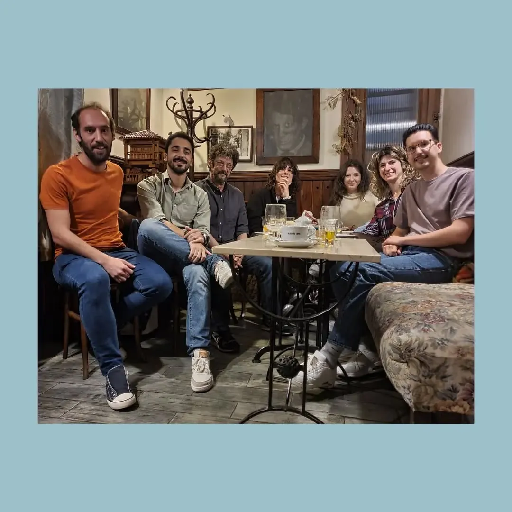
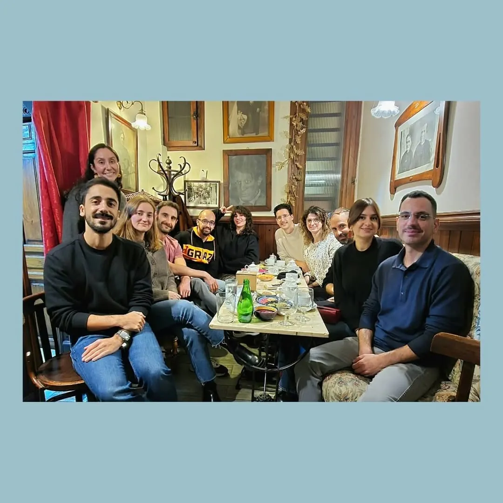
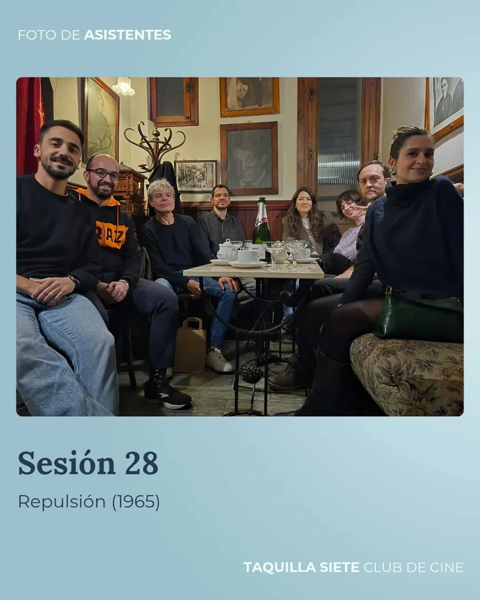
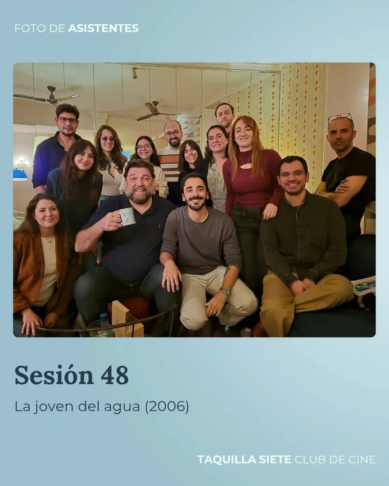
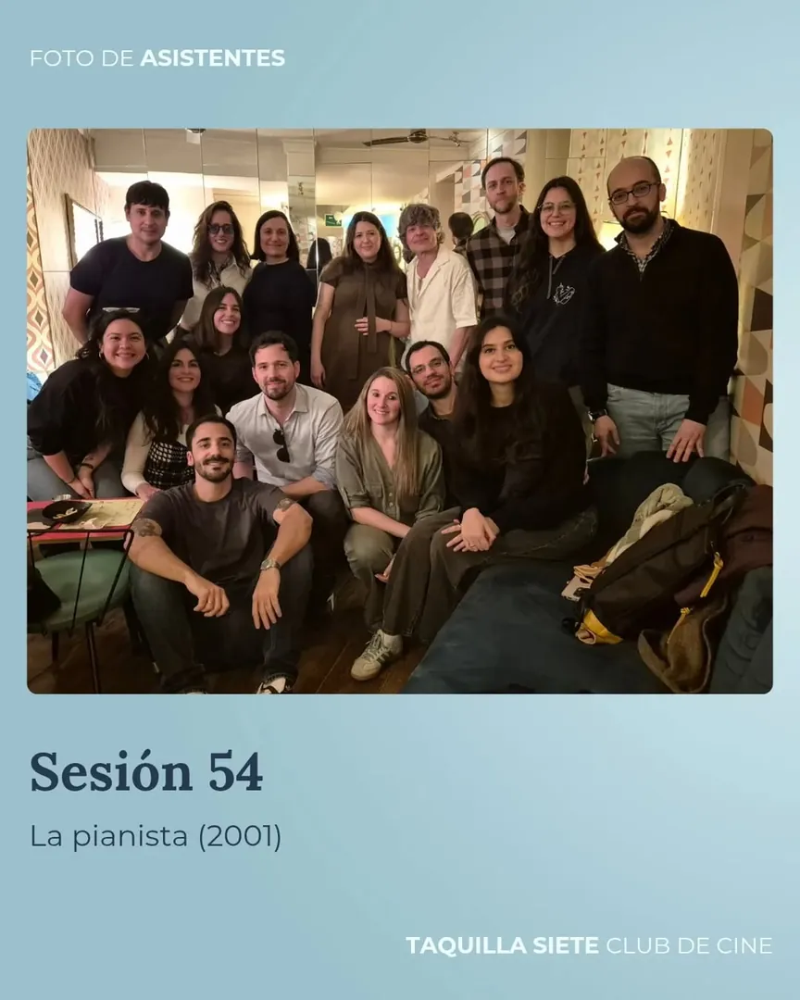
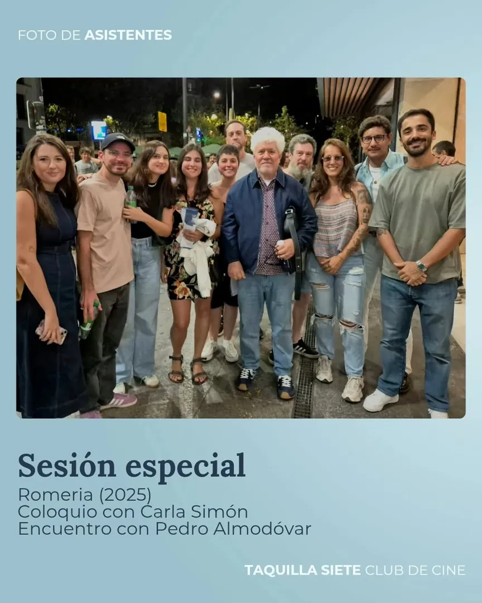
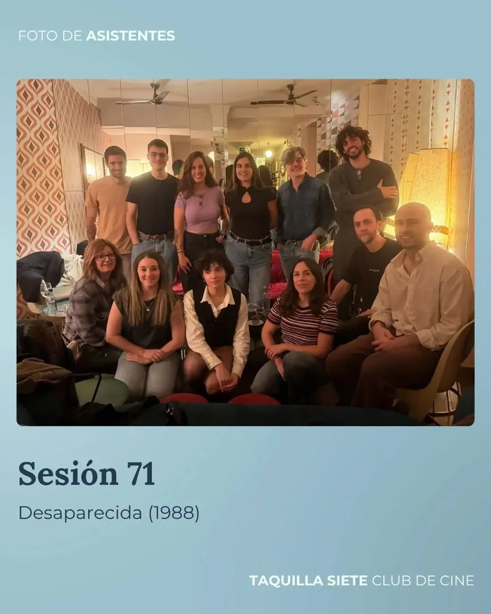

Sesiones especiales
De vez en cuando, la tertulia se nos llena de cine por partida doble: en nuestro club de cine en Madrid compartimos sesión con invitados del mundillo — actores, directores, gente que vive las películas desde dentro — que se sientan con nosotros a comentar una película como uno más.
Estas son algunas de las sesiones y encuentros que hemos tenido la suerte de vivir:

Manolo Solo Under the Skin Jonathan Glazer · 2013 Ver publicación →
Dani Rovira Caro Diario Nanni Moretti · 1993 Ver publicación →
Nacho Guerreros Repulsión Roman Polanski · 1965 Ver publicación →
Hovik Keuchkerian La joven del agua M. Night Shyamalan · 2006 Ver publicación →
Nacho Guerreros La pianista Michael Haneke · 2001 Ver publicación →
Pedro Almodóvar Encuentro con el club Tras la sesión de Romería · 2025 Ver publicación →
Nacho Guerreros Desaparecida George Sluizer · 1988 Ver publicación →